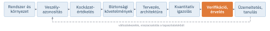
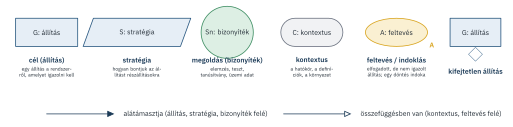
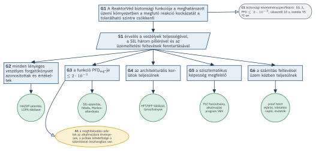
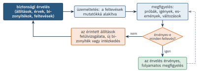

17. Biztonsági érvelés és igazolás

Az előző fejezetek sokféle elemzést, számítást és tervezési döntést mutattak be. Egy biztonságkritikus rendszer üzembe helyezésekor azonban nem elég, hogy ezek egyenként elkészültek: valakinek (a hatóságnak, egy független értékelőnek, a vállalat vezetésének, végső soron a társadalomnak) meg kell győződnie arról, hogy együtt elegendők a rendszer biztonságának alátámasztására. Erre szolgál a biztonsági érvelés (safety case): egy strukturált érvelés, amely bizonyítékokra támaszkodva meggyőzően és ellenőrizhetően mutatja be, hogy a rendszer egy adott alkalmazásban és környezetben elfogadhatóan biztonságos. Ebben a fejezetben megismerjük a biztonsági érvelés eredetét és elemeit, a célstruktúra-jelölést (GSN), a ReaktorVéd biztonsági érvelésének vázát, a független értékelés formáit, a biztonsági érvelések tipikus gyengeségeit, végül az üzemeltetés során folyamatosan karbantartott, „élő” biztonsági érvelés gondolatát.
A fejezet végére képes leszel
- megmagyarázni a biztonsági érvelés célját, elemeit és szerepét a különböző ágazatok szabályozásában;
- GSN-jelöléssel felépíteni egy biztonsági érvelés vázát, és azonosítani benne az állításokat, a stratégiákat, a bizonyítékokat, a kontextust és a feltevéseket;
- az eddigi elemzéseket (veszélyelemzés, LOPA, hibafa, SIL-igazolás, szoftverigazolás) egy koherens érvelésbe rendezni;
- felismerni a biztonsági érvelések tipikus gyengeségeit, és a független értékelés szerepét;
- megtervezni, hogyan marad érvényes egy biztonsági érvelés az üzemeltetés és a változások során.
17.1. A biztonsági érvelés eredete és célja
A biztonsági érvelés mint szabályozási eszköz súlyos balesetek tanulságaiból született. Az Északi-tengeren 1988. július 6-án a Piper Alpha olajfúró platformon bekövetkezett robbanás és tűz 167 ember életét követelte. A Cullen-vizsgálat megállapította, hogy az előíró jellegű szabályozás (amely részletes műszaki előírások betartását ellenőrzi) nem volt képes kezelni egy bonyolult létesítmény kockázatait, és azt javasolta, hogy az üzemeltetőnek kelljen bizonyítania: azonosította a súlyos baleseti veszélyeket, és a kockázatokat a lehető legalacsonyabbra csökkentette (Cullen 1990). Ez a célkitűzés-alapú szabályozás (goal-based regulation) a brit offshore iparban 1992-ben lépett életbe, és azóta sok ágazatban elterjedt.
A biztonsági érvelés ma számos szabályozásban és szabványban kötelező vagy ajánlott munkatermék: az Egyesült Királyságban az offshore és a nukleáris iparban, a vasúti biztonsági jelzőrendszereknél az EN 50129 szerint (CENELEC 2018), a közúti járművekben az ISO 26262 szerint (ISO 2018), az autonóm termékekre pedig az UL 4600 egész szabványa a biztonsági érvelésre épül (UL Standards & Engagement 2023). A folyamatiparban az IEC 61511 nem használja ezt a kifejezést, de a funkcionális biztonsági értékelés és a dokumentációs követelmények lényegében ugyanezt szolgálják (IEC 2016).
A biztonsági érvelés három dolgot kapcsol össze: az állításokat (mit állítunk a rendszer biztonságáról), a bizonyítékokat (elemzések, tesztek, tanúsítványok, üzemi tapasztalat) és az érvelést, amely megmutatja, miért támasztják alá a bizonyítékok az állításokat (Kelly 1998). A harmadik elem a legfontosabb és a leggyakrabban hiányzó: egy halom dokumentum önmagában nem érv. Ahhoz, hogy egy értékelő meggyőződhessen a rendszer biztonságáról, látnia kell, hogyan függenek össze az egyes bizonyítékok, mely feltevésekre épülnek, és mi hiányzik.
17.2. A célstruktúra-jelölés (GSN)
A biztonsági érvelések leírására a legelterjedtebb grafikus nyelv a célstruktúra-jelölés (Goal Structuring Notation, GSN), amelyet Tim Kelly dolgozott ki a York-i Egyetemen (Kelly 1998; Kelly és Weaver 2004), és amelynek ma a 3. változatú közösségi szabványa érvényes (Assurance Case Working Group 2021). A GSN elemei (17.1. ábra):
- cél (állítás): egy állítás a rendszerről, amelyet igazolni kell („a funkció PFD-je legfeljebb \(2\cdot10^{-3}\)”);
- stratégia: az érvelés módja, ahogyan egy állítást részállításokra bontunk („érvelés a SIL három pillére szerint”);
- megoldás (bizonyíték): egy elemzés, teszt, tanúsítvány vagy üzemi adat, amely egy állítást közvetlenül alátámaszt;
- kontextus: a hatókör, a definíciók, a működési környezet, amelyre az állítás vonatkozik;
- feltevés és indoklás: elfogadott, de nem igazolt állítás, illetve egy stratégia vagy döntés indoka;
- kifejtetlen állítás: amelynek alátámasztása még hiányzik (a fejlesztés közben hasznos jelölés).

A GSN-érvelés fentről lefelé épül: a legfelső állítás (rendszerint „a rendszer elfogadhatóan biztonságos az adott környezetben”) stratégiákon keresztül részállításokra bomlik, és minden ág egy vagy több bizonyítékkal zárul. A jól felépített érvelésben minden állítás egyértelmű, ellenőrizhető mondat, minden stratégia megmondja, miért elegendő a részállítások összessége, és a kontextus és a feltevések pontosan rögzítik az érvelés érvényességi körét. A GSN szabvány ismétlődő érvelési mintákat (patterns) és moduláris érveléseket is támogat, amelyek a nagy, több beszállítós rendszereknél nélkülözhetetlenek (Assurance Case Working Group 2021).
A ReaktorVéd biztonsági funkciójának érvelése (17.2. ábra) a G1 állításból indul: a funkció a meghatározott üzemi környezetben a megfutó reakció kockázatát a tolerálható szintre csökkenti. A kontextus (C1) a biztonsági követelményspecifikáció. Az S1 stratégia öt részállításra bontja az érvelést:
- G2: minden lényeges veszélyes forgatókönyvet azonosítottak és értékeltek – bizonyíték a HAZOP-jelentés és a LOPA-táblázat (5. és 11. fejezet);
- G3: a funkció PFDavg-je legfeljebb \(2\cdot10^{-3}\) – bizonyíték a SIL-számítás, a hibafa és a Markov-modell összevetése (10–13. fejezet); a számítás az A1 feltevésre épül (a meghibásodási adatok érvényesek, a próbák lefedettsége a számítással összhangban van);
- G4: az architekturális korlátok teljesülnek – bizonyíték a HFT/SFF-táblázat és a tanúsítványok;
- G5: a szisztematikus képesség megfelelő – bizonyíték a PLC tanúsítványa és az alkalmazási program verifikációja és validálása (15. fejezet);
- G6: a számítás feltevései üzem közben teljesülnek – bizonyíték a proof teszt eljárása, a kiiktatások naplója és a teljesítménymutatók.

Az érvelés felépítése közben két hiányosság derült ki, ami a módszer egyik fő hasznát mutatja. Az A1 feltevés első változata egyszerűen „a meghibásodási adatok érvényesek” volt; a 13.5. szakasz elemzése után a csapat felismerte, hogy a próbák lefedettsége a feltevés kritikus része, és ezt explicitté tette. A G6 állítás eredetileg hiányzott; a csapat úgy gondolta, hogy az üzemeltetés „már nem a projekt része”. A biztonsági érvelés azonban arról szól, hogy a rendszer az életciklusa során biztonságos, és ez nem igazolható az üzemeltetési feltételek nélkül.
17.3. Független értékelés
A biztonsági érvelés értéke azon múlik, mennyire alapos és pártatlan a felülvizsgálata. A szabványok ezért az integritási szinttől függő függetlenséget írnak elő a verifikációban és az értékelésben. Az IEC 61511 a funkcionális biztonsági értékelést (functional safety assessment, FSA) öt ponton írja elő vagy ajánlja: a veszély- és kockázatelemzés és a követelményspecifikáció után, a tervezés után, a telepítés, az üzembe helyezés és a validálás után (a veszélyes anyagok bevezetése előtt), az üzemeltetési tapasztalatok megszerzése után, és a módosítások után (IEC 2016). Az ISO 26262 megerősítő intézkedéseket (confirmation measures) ír elő: a munkatermékek megerősítő felülvizsgálatát, a funkcionális biztonsági auditot és a funkcionális biztonsági értékelést, az ASIL-tól függő függetlenségi szinttel (ISO 2018).
A független értékelő nem a hibák vadászata miatt fontos, hanem mert a fejlesztőcsapat óhatatlanul a saját feltevéseinek foglya. Egy kívülálló könnyebben észreveszi a hiányzó veszélyeket, az indokolatlan feltevéseket és az érvelés gyenge pontjait.
17.4. A biztonsági érvelések gyengeségei
A biztonsági érvelés hatékony eszköz, de visszaélhető vagy kiüresíthető. A legtanulságosabb példa a brit királyi légierő Nimrod XV230 felderítő repülőgépének 2006-os afganisztáni katasztrófája, amelyben tizennégy katona halt meg. A gép biztonsági érvelését néhány évvel korábban készítették el, de a független vizsgálat szerint az érvelés súlyos hibákat tartalmazott, és egy olyan veszélyt, amely a balesethez vezetett, nem értékelt megfelelően. Haddon-Cave jelentése szerint a biztonsági érvelés papírmunkává, a megfelelés kipipálásává vált, amely a dokumentáció mennyiségét tévesztette össze a biztonság igazolásával, és a szervezetben mindenki azt feltételezte, hogy valaki más gondoskodik a valódi kockázatokról (Haddon-Cave 2009).
A tipikus gyengeségek:
- megerősítési torzítás: az érvelés természeténél fogva arra ösztönöz, hogy a biztonságot alátámasztó bizonyítékokat keressük, ne a cáfolókat; a jó érvelés ezért kifejezetten foglalkozik az ellenérvekkel és a kétségekkel;
- a bizonyíték és az állítás közti rés: a bizonyíték csak egy szűkebb állítást támaszt alá, mint amire használják (például egy teszt csak normál körülményeket fedett le);
- rejtett feltevések: az érvelés egy olyan feltevésen múlik, amelyet sehol nem mondtak ki (például hogy a próbák minden hibát felfednek);
- elavulás: a rendszer, a környezet vagy a használat megváltozott, az érvelés nem;
- a mennyiség mint minőség: több ezer oldal dokumentáció, amelyből senki sem látja, mi az érv lényege.
A GSN 3. változata ezért lehetővé teszi, hogy az érvelés kapcsolataihoz bizonyossági pontokat (assurance claim points) rendeljünk, ahol külön érvelés mutatja be, mennyire bízhatunk az adott lépésben (Assurance Case Working Group 2021). Az UL 4600 pedig minden fejezetéhez jellegzetes hibalistákat ad, amelyeket az értékelőnek ellenőriznie kell (UL Standards & Engagement 2023).
17.5. Az élő biztonsági érvelés
A biztonsági érvelést hagyományosan az üzembe helyezés előtt készítik el, és utána legfeljebb a nagyobb módosítások idején veszik elő. Ez a gyakorlat két okból elégtelen. Egyrészt az érvelés feltevései (meghibásodási ráták, próbák lefedettsége, a kezelők reakcióideje, az igények gyakorisága) üzem közben változnak, és csak a működő rendszer adataiból ellenőrizhetők. Másrészt a tanuló, adaptív rendszerek (például a gépi tanulási komponensek) viselkedése az üzemeltetés során is változhat (18. fejezet). Denney, Pai és Habli ezért dinamikus biztonsági érvelést javasolnak, amelynek érvényességét a rendszer működése során folyamatosan ellenőrzik, és amely a megfigyelt adatok alapján frissül (Denney és mtsai. 2015). Az UL 4600 hasonló elven biztonsági teljesítménymutatókat (safety performance indicators) követel meg, amelyek az érvelés feltevéseinek érvényességét mérik az üzemeltetés során (UL Standards & Engagement 2023).
Az élő érvelés ciklusa (17.3. ábra) a feltevéseket mérhető mutatókká alakítja; a próbák, az igények, az események és a változások adatait folyamatosan összeveti velük; és ha egy feltevés sérül, az érintett állításokat felülvizsgálja, új bizonyítékot gyűjt vagy intézkedést hoz. Ez a gondolat a 11.3. szakaszban látott gátállapot-követést általánosítja, és összekapcsolja a biztonsági érvelést a változáskezeléssel (4. fejezet).

A G6 állítás alatti mutatók: a gyorszáró szelepek proof tesztjeinek és részleges löketpróbáinak teljesítése az ütemterv szerint; a próbák során talált hibák száma és jellege (a meghibásodási ráta feltevésének ellenőrzésére); a valódi igények gyakorisága (a LOPA kezdő esemény gyakoriságának ellenőrzésére); a kiiktatások száma és időtartama; a biztonsági funkció téves leállásainak gyakorisága; a TAH-103 riasztás megszólalása és a kezelői reakcióidő; a riasztási rendszer teljesítménymutatói. Ha például a próbákon a vártnál több szelephiba derül ki, vagy a kiiktatások összideje meghaladja a feltételezett értéket, az érvelést felül kell vizsgálni, és szükség esetén módosítani a karbantartási stratégiát vagy a tervet. A biztonsági érvelés így a karbantartási és üzemeltetési döntések mindennapi eszközévé válik.
A vészfékező asszisztens biztonsági érvelése két nagy ágból áll. Az egyik a funkcionális biztonságé (ISO 26262): a hardver- és a szoftverhibák elleni védelem, az ASIL-követelmények teljesülése. A másik a rendeltetésszerű funkció biztonságáé (ISO 21448): annak igazolása, hogy a teljesítőképesség korlátai (például az érzékelés ködben vagy a szokatlan alakú akadályok felismerése) nem okoznak elfogadhatatlan kockázatot, és a fennmaradó ismeretlen veszélyes helyzetek valószínűsége kellően kicsi (18. fejezet). A második ág bizonyítékai nagyrészt statisztikai és szimulációs jellegűek, és az érvelés üzem közbeni frissítése (a terepen gyűjtött adatok alapján) itt különösen fontos.
A gépekre vonatkozó (EU) 2023/1230 rendelet szerint a gyártónak műszaki dokumentációt kell összeállítania, amely tartalmazza a kockázatértékelést, az alkalmazott szabványokat, a biztonsági funkciók igazolását és a vizsgálati eredményeket, és ennek alapján állítja ki az EU-megfelelőségi nyilatkozatot (Európai Parlament és Tanács 2023). Bár a rendelet nem használja a biztonsági érvelés kifejezést, egy jól felépített műszaki dokumentáció valójában az: állítások (a cella megfelel az alapvető egészségvédelmi és biztonsági követelményeknek), bizonyítékok (PL-számítások, mérések, ütközési erőmérések) és érvelés (miért elegendők ezek). A GSN szerkezet itt is segít abban, hogy a dokumentáció ne csak egy iratgyűjtő, hanem egy ellenőrizhető érvelés legyen.
- A biztonsági érvelés strukturált érvelés, amely bizonyítékokra támaszkodva mutatja be, hogy a rendszer egy adott alkalmazásban és környezetben elfogadhatóan biztonságos; a célkitűzés-alapú szabályozás eszköze, a Piper Alpha-katasztrófa tanulságaiból született.
- Elemei az állítások, az érvelés (stratégiák), a bizonyítékok, a kontextus és a feltevések; az érvelés a leggyakrabban hiányzó elem.
- A GSN szabványos grafikus jelölés, amely fentről lefelé bontja az állításokat, és mintákat és modularitást is támogat.
- A ReaktorVéd érvelése a veszélyek teljességére, a SIL három pillérére és az üzemeltetési feltevések fenntartására épül; felépítése során rejtett feltevések kerültek felszínre.
- A független értékelés az integritási szinttől függő függetlenséggel szükséges.
- A tipikus gyengeségek a megerősítési torzítás, a bizonyíték és az állítás közti rés, a rejtett feltevések, az elavulás és a dokumentációmennyiség; a Nimrod-katasztrófa mutatta meg a kiüresedett érvelés veszélyét.
- Az élő biztonsági érvelés a feltevéseket mutatókká alakítja, és az üzemeltetés során folyamatosan ellenőrzi.
- Miben különbözik a célkitűzés-alapú szabályozás az előíró jellegű szabályozástól? Milyen előnyei és kockázatai vannak?
- Egy biztonsági érvelésben ez az állítás szerepel: „A szoftvert alaposan tesztelték.” Mi a baj vele? Fogalmazd meg jobban!
- Melyik GSN-elemmel ábrázolnád: (a) a ReaktorVéd üzemi hőmérséklet-tartományát; (b) azt, hogy a távadók meghibásodási rátája a gyártói adatnak felel meg; (c) a HAZOP-jelentést?
- Miért nem elég a biztonsági érvelést az üzembe helyezés előtt elkészíteni?
- Milyen tanulságokat fogalmazott meg a Nimrod-vizsgálat a biztonsági érvelésekről?
Megoldás
- Az előíró szabályozás részletes műszaki követelmények betartását ellenőrzi; a célkitűzés-alapú szabályozás azt követeli meg, hogy az üzemeltető bizonyítsa: azonosította a veszélyeket, és elfogadható szintre csökkentette a kockázatokat. Előnye, hogy az egyedi és új rendszerekhez is alkalmazható, és a kockázatokra összpontosít; kockázata, hogy a minősége a felkészültségen és az őszinteségen múlik, és könnyen formális papírmunkává válhat.
- Nem ellenőrizhető: nem mondja meg, mit, mi ellen és milyen kritérium szerint teszteltek. Jobban: „A szoftver minden biztonsági követelményét követelményalapú teszt ellenőrzi, a tesztek a kód MC/DC-lefedettségét 100%-ban elérik, és minden teszt sikeres.” Ez állítás, amelyet a tesztjelentés és a lefedettségi jelentés közvetlenül alátámaszt.
- kontextus; (b) feltevés (ha nem igazoljuk) vagy egy részállítás, amelyet üzemi adatokkal támasztunk alá; (c) megoldás (bizonyíték).
- Mert az érvelés feltevései (meghibásodási ráták, próbák, igénygyakoriság, kezelői teljesítmény) üzem közben változhatnak, és csak a működő rendszer adataiból ellenőrizhetők; a módosítások és a környezet változásai pedig az érvelés egyes részeit érvényteleníthetik.
- Hogy a biztonsági érvelés könnyen papírmunkává válik, ha a megfelelés igazolására és nem a valódi veszélyek feltárására készül; hogy a dokumentáció mennyisége nem pótolja az érvelés minőségét; hogy a felelősség szétaprózódása miatt mindenki másra számít; és hogy az érvelést a rendszer egész életciklusa során karban kell tartani.
- Kelly, T. P. (1998): Arguing Safety – A Systematic Approach to Managing Safety Cases. PhD-értekezés, University of York (Kelly 1998).
- Assurance Case Working Group (2021): Goal Structuring Notation Community Standard, 3. változat. SCSC (Assurance Case Working Group 2021).
- Haddon-Cave, C. (2009): The Nimrod Review. The Stationery Office (Haddon-Cave 2009).
- UL 4600:2023 – az autonóm termékek biztonsági érvelésen alapuló értékelése (UL Standards & Engagement 2023).
- Denney, E., Pai, G., Habli, I. (2015): Dynamic safety cases for through-life safety assurance. ICSE (Denney és mtsai. 2015).